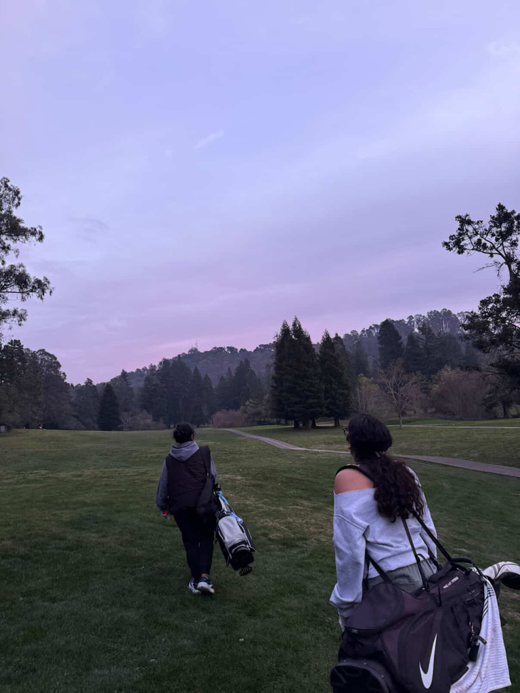
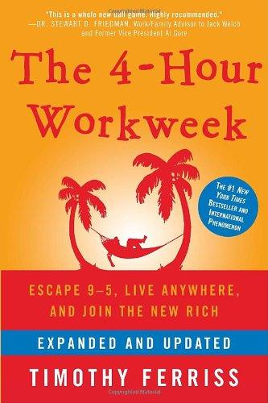

Hi, I'm Sharini!
Data Science + Public Health @ UC Berkeley · Design Innovation
I’m Sharini, a senior at UC Berkeley studying Data Science with an emphasis in Public Health, along with a certificate in Design Innovation. I love combining creativity, technology, and care for people to design products that make a real difference, especially around food and health.
My love for design started in our sunroom, watching my mom paint. One day she handed me a tiny canvas with an elephant on it, and I painted the whole thing neon green. Since then, art has been how I connect with people, from Tanjore painting to teaching art classes at my local library.
I also love solving problems, and data science gives me the freedom to explore new technology and build what I design, from an Arduino-powered solar dryer to full-stack apps such as Skinship. I’m drawn to building and designing for problems that my community faces, and product design is where I get to bring it all together.
In my free time you can find me outdoors running, hiking, or playing tennis, testing out new recipes, listening to music, or writing on my Substack.

Today:
- Go for a run
- Test a new recipe
- Paint something
- Write on Substack ♡
“Art has been how I connect with people.”— me
Relevant Experiences
Associate Strategy Consultant @ Lotus Foods (via FEED)
(Sep 2026 – Present)
Software Engineering Intern @ Legali AI
(May 2026 – Aug 2026)
Data Analytics Research Apprentice @ Berkeley Haas
(Jan 2026 – May 2026)
Health Economics Research Assistant @ Petris Center
(Jan 2025 – Jan 2026)
Bioengineering Research @ Conolly Lab (Berkeley Imaging Systems Lab) and Tikhomirov Lab (Berkeley EECS)
(2024 – 2025)
Top Reads
-
The Kite Runner
The Kite Runner
-
Animal Farm
Animal Farm
-
Night
Night
-

The 4-Hour WorkweekThe 4-Hour Workweek
Education
UC Berkeley (2023-2027)
- B.A. Data Science, Public Health emphasis
- Berkeley Certificate in Design Innovation (in progress)
- Sutardja Certificate in Entrepreneurship & Technology (in progress)
Communities!
- FitStaff Operations Lead @ Berkeley Rec Well
- Evening with Industry Committee @ Society of Women Engineers
- Food, Equity, Entrepreneurship & Development (FEED) @ UC Berkeley
- Laya @ Berkeley (Carnatic music)